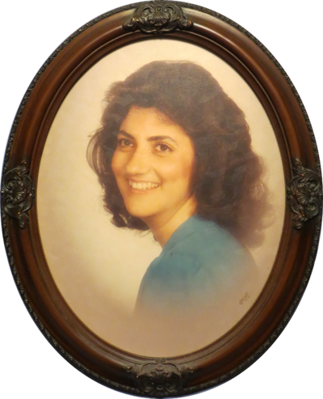

Dorothy Marie Byrd Hollis
(April 7, 1963-August 16, 2021)

Dorothy Hollis passed away on August 16, 2021. She was pre-deceased by her father L Maurice Byrd. She is survived by her husband of 33+ years, Gary Dee Hollis, her sons Gary Dee Hollis, Jr., Jordan Chavis Hollis (J. C.), her daughter-in-law, Lisa Manjin Hollis, and her granddaughter, Neveah Belle Hollis.
She is also survived by her mother, Dotty Byrd (Columbia, SC), her two brothers, L Maurice Byrd (wife Sandra, Crestwood, KY), and sister, LaMonika Davis (husband Phil, Eastover, SC). She is also leaving behind many nieces and nephews.
She served as the administrative assistant at the Elmwood Avenue Church of God for almost 20 years where she was lovingly called Ms. Dorothy. Also as a young girl, she helped teach in Children's Church for many years.
She had the voice of an angel, and sang in the Church Choir and Praise Team while she was physically able.
She will be truly missed by her family and friends and all who knew her.
Memorial Service
Her memorial service will be held at 2:00 pm September 4, 2021, preceeded by a 1:00pm visitation, located at
Elmwood Avenue Church of God
1427 Elmwood Avenue
Columbia, SC 29201